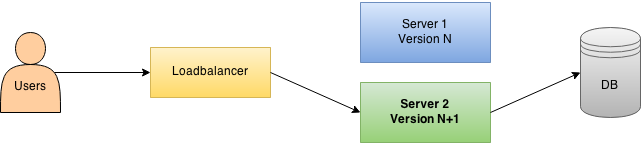

Notre équipe est constitué de 21 développeurs dont 2 ops.
Les développeurs ont des responsabilités devops, telles que la livraison en production, la gestion de la configuration des environnements, le monitoring, etc.
Notre évolution du delivery en transformation vers du continuous delivery
On a besoin de certains éléments préalables
Un code correctement segmenté (avec des parties indépendantes), une bonne couverture de test, des features indépendantes (donc des branches indépendantes) et une chaine de build rapide et automatique (y compris le déploiement).
Normalement, nos 200 tests selenium prendraient 6 heures. Avec un grid selenium classique, on arrive à 1 heure
Avec un grid selenium en RAMFS ? 10 minutes
LesFurets selenium grid :
https://github.com/lesfurets/selenium-lxc
En plus du monitoring technique et métier, on a besoin d'un monitoring UI, LesFurets Zeno pixel :
https://github.com/lesfurets/zeno-pixel
Déploiement blue / green, 0 downtime, avec HAProxy
Avec une code base en trunk based, toutes les features sont dans le master, ce qui permet de faire du build automatique, tous les commits sont envoyés en production à chaque release, nécessite du feature toggling et une forte maturité sur les tests.
La migration vers le continuous delivery est risqué
Avec une code base en feature branching, chaque feature est sur une branche dédiée, la production est la fusion du master et des features, les développement avancent en isolation, et on livre une branche lorsqu'elle est prête.
On pert l'intégration continue et la gestion des conflits

On veut une code base en feature branching (pour sa flexibilité) et on veut faire du continuous delivery (pour sa valeur ajouté), sans perdre de qualité.
Autrement dit, comment réconcilier feature branching et continuous delivery ?
On fait du feature branche + continuous merge.
Feature branching
on part d'un master
TODO
Feature branching
création branche développement features/f1
TODO
Feature branching
création branche développement features/f2
TODO
Feature merge
les historiques de features/f1 et features/f2 sont séparés
TODO
Feature merge
on fusionne les deux avec un commit de merge
TODO
Le continuous merge est un process au coeur de notre capacité à faire du continuous delivery
Continuous merge
on sait fusioner ponctuellement 2 historiques
TODO
Continuous merge
alors losqu'un des historique avance
TODO
Continuous merge
on le fusionne automatiquement avec le reste
TODO
Le merge de plusieurs branches avec pattern :
git merge features/*
...n'existe pas, donc on l'a créé
LesFurets git-octopus :
https://github.com/lesfurets/git-octopus
Mais que se passe-t'il lorsqu'il y a des conflits ?
Gestion des conflits
jusqu'ici tout va bien
TODO
Gestion des conflits
une nouvelle branche sauvage "new" apparaît
TODO
Gestion des conflits
git-octopus nous dit quelle ne fusionne pas
TODO
Gestion des conflits
alors git-octopus teste le merge entre new et master
TODO
Gestion des conflits
alors git-octopus teste le merge entre new et f1
TODO
Gestion des conflits
alors git-octopus teste le merge entre new et f2, qui échoue, donc new ne fusionne pas avec f2
TODO
L'utilisation de git-octopus dans l'intégration continue permet de détecter les conflits très tôt
éviter le conflit au niveau du code
DANGER ZONE : safe
L'octopus n'arrive pas à fusionner les branches à cause de features/new
TODO
Modifier le code de features/new pour éviter le conflit
TODO
L'octopus passe
TODO
enlever la branche de l'octopus
DANGER ZONE : safe
L'octopus n'arrive pas à fusionner les branches à cause de features/new
TODO
On utilise le pattern de nommage pour enlever la branche de l'octopus
TODO
L'octopus passe
TODO
fusionner la branche
DANGER ZONE : danger
L'octopus n'arrive pas à fusionner les branches à cause de features/new
TODO
On fusionne les 2 branches features/f2 et features/new ensemble en feature/f2_new
TODO
On supprime les 2 anciennes branches features/f2 et features/new
TODO
L'octopus passe
TODO
rebase la branche
DANGER ZONE : danger
L'octopus n'arrive pas à fusionner les branches à cause de features/new
TODO
On rebase features/new sur features/f2
TODO
L'octopus passe
TODO
git-conflict TODO STAR ICON (résolution de conflit distribué, livré avec git-octopus)
DANGER ZONE : safe
L'octopus n'arrive pas à fusionner les branches à cause de features/new
TODO
Un dépôt de résolution de conflit est situé sous conflict/resolutions
TODO
La fusion ne fonctionne pas
TODO
On vérifie pour le conflit en question s'il y a une résolution de disponible
TODO
L'octopus passe
TODO
(1) éviter les conflits
(2) enlever la branche de l'octopus
(3) utiliser git-conflict
(4) fusionner / rebase les branches
- TODO lien vers google-groups
- TODO lien vers git-octopus